ojo 有两套设计,别把它们混为一谈
几乎所有"ojo 好美"的印象,来自叙事营销层。真正要复刻进产品的"好用",在产品 UI 层。它们的底色、字体、强调色与运动都不同,抽取数据里两套语言的证据清晰可辨。
首屏与滚动叙事。所有"艺术感"都在这里。
- 梵高《星夜》油画场景:画家背影、漩涡星空、向日葵,把智能体拟人成艺术家
- 深黑打底 #000(样式表出现 25 次,居首),暖白奶油标题 #fff8eb
- 强调用明黄 #ffc000;标题用 Faculty Glyphic 衬线
- 氛围层长循环运动(4 到 18 秒):星夜呼吸、卡片漂浮、技能走马灯
登录后的工作台。刻意干净、近乎无彩、功能优先。
- 白底 #fff(
--color-background为0 0% 98%),纯黑文字 - 中性色是完整的 Radix 灰阶
--gray1到--gray12 - 强调换成橙 #f97316(
--color-commercial-accent),UI 字用 Geist - 运动收敛到 120 到 400 毫秒的悬停与焦点微交互
要复刻的目标:营销层的叙事氛围,叠加产品层的克制手感
首页正是两层的交汇处:它用产品级的干净对话组件(深黑玻璃输入框、模型选择、技能标签),去承载一个艺术化的叙事母题。把抽象的多智能体编排,讲成"一支会画画的团队"。
深黑、奶油白、一点明黄,和星夜的蓝
点任意色块复制 HEX。所有色值取自样式表高频统计与计算样式,是实锤;HSL 到 HEX 为忠实换算。
叙事营销层
智能体卡片光谱 —— 全站唯一的高饱和用色
产品 UI 层 · Radix 灰阶(点色块复制)
产品主色 --color-primary 为 hsl(210 52.5% 35.5%)(约 #2b5b8a,去饱和的蓝);文字分三级透明度(主、次 .5、三级 .3)。这套灰阶与语义色是产品的设计系统底座,与首页的艺术叙事完全分层。
衬线讲叙事,无衬线做产品
抽取时 document.fonts 实测报告五款自托管拉丁字体:Georama、Lexend、DM Serif Text、Faculty Glyphic、Miss Fajardose;正文与 UI 的计算字体是 Geist Sans(经 --font-ui-default 引用)。本页把这五款真字直接以 @font-face 接进来(文件见 real-assets/fonts/):标题英文用真实 Faculty Glyphic,中文用思源宋体,UI 与正文用 Geist(站点未自托管该文件,走 Google Fonts 真实字体)。
首屏原文与首字下沉的真实排印。大标题实测 60.48px,行高 86.4px(约 1.43 倍字号),字重 400,颜色 #fff8eb。衬线雕刻风压在油画上有手作感。
Vercel 出品的现代无衬线。站点 --font-ui-default 与 --font-numeric 都是它,承担界面与数字。
极细的花体草书,呼应"艺术家签名"的意象。是五款自托管字体里最具叙事性的一支,本页以真实字体文件呈现。
原型里的展示标题(见下方真实原型「Aurelle」)
副文与标签
可变字重辅助
双时间尺度:手感与氛围叠在一起
ojo 把两种时间叠在一起——120 到 400 毫秒的微交互保证点击手感,4 到 18 秒的长循环营造星夜与画布的生命感。点任一卡片重放,曲线与时长为其真实取值。
时长阶梯(真实 token,分两层)
按钮过渡逐字为 background-color .18s, color .18s, opacity .18s, transform .12s——位移(.12s)比变色(.18s)更快,让按下的形变先到位,手感更脆。
真实关键帧清单 —— 签名母题都写在名字里
设计智能体团队工作台
下面是首页第二屏的实时复现:深黑玻璃对话框带流动边框,四张智能体团队卡在星夜辉光上悬浮漂移,底部技能走马灯无缝滚动。所有运动用 ojo 的真实缓动与时长。可以试着操作它。
手 (1).png),以极低透明度叠出"代码即创作"的母题。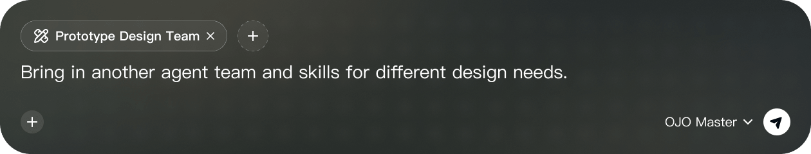
real-assets/image)。此处并置原件,便于核对复现精度。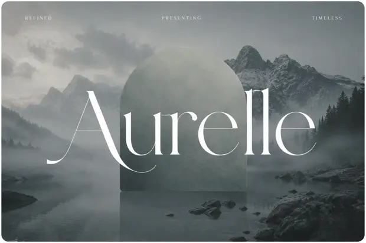
圆角、点阵、玻璃、辉光
ojo 的手作感来自一组稳定的工艺选择。数值均取自样式表实测。
圆角语言
主导是药丸 999px(按钮、标签、CTA,出现 8 次);容器用 24px 到 28px 中大圆角;发送键与头像用 50%。整体"大控件用药丸、容器用中圆角"。
点阵底、玻璃与辉光
深色段普遍铺一层极淡的圆点网格(单元约 22px),让纯黑不死板,也呼应画布的坐标感——本页整页就铺着它。对话框是深色半透明玻璃配 blur(20px) 与细边框;团队卡在卡底叠品牌色径向辉光,做成"发光的能力块"。边框普遍是低透明度暖白,不喧宾夺主。
媒体选型(实测清单)
氛围靠预渲染的油画风插画(图片主导)而非重量级 WebGL,是成本可控的选择。Canvas 推断用于点阵或无限画布上的光标游走(landingpage-cursor-wander-1)。
真实素材 · 智能体魔法卡组(8 张,从站点提取)
这些是 ojo landing 里 agent-magic-cards 的真图(real-assets/image),不是重绘。全站唯一的高饱和用色几乎都收在这一组里;其中「星夜漩涡」正是把梵高星夜母题压进一张卡片。
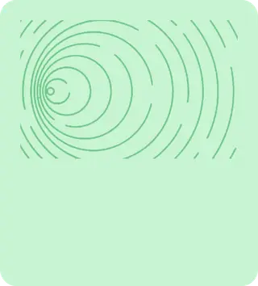
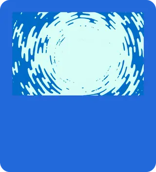
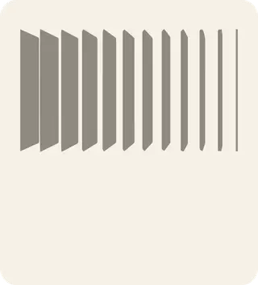
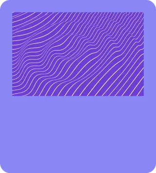
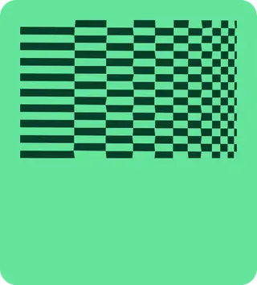
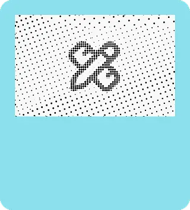
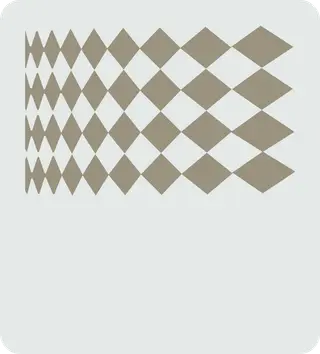
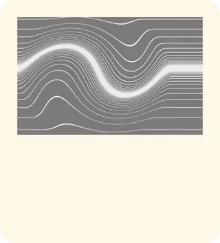
线上真实渲染实拍与真实产品演示
下面既有 ojo.art 的真实渲染截图(非拼贴、非重绘,整页可上下滚动),也内嵌了站点唯一的那段真实产品演示视频。
.mp4,静音自动循环。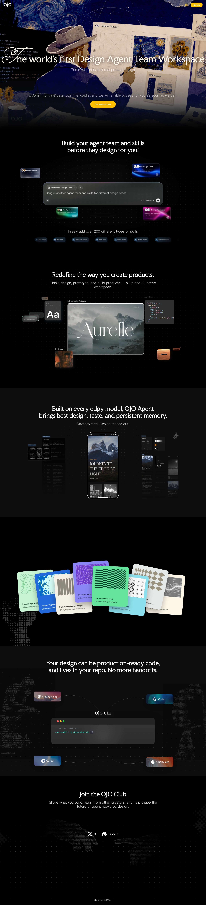
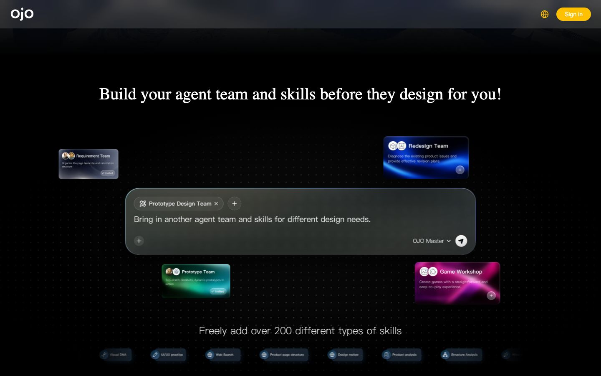
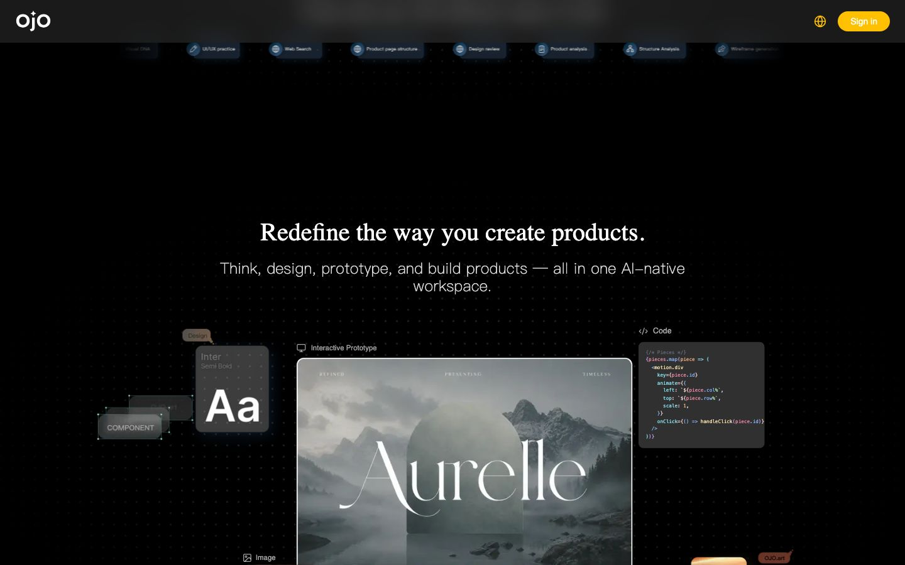
把上面的数值直接接进你的产品
1 · 落地 token(复制即用)
:root{ --black:#000; --panel:#0d0d0d; --cream:#fff8eb; --yellow:#ffc000; --starry:#5f86a8; --serif:"Faculty Glyphic",serif; --sans:"Geist",system-ui,sans-serif; --ease-std:cubic-bezier(.4,0,.2,1); --ease-out:cubic-bezier(.16,1,.3,1); --micro:.18s; --micro-fast:.12s; --pill:999px; --r-md:24px; }
2 · 玻璃对话框流动边框
.chatbox::before{content:"";position:absolute; inset:0;border-radius:inherit;padding:1.4px; background:conic-gradient(from var(--a), #ffc00000,#ffc000,#5f86a8,#ffc00000); -webkit-mask:linear-gradient(#000 0 0) content-box, linear-gradient(#000 0 0); -webkit-mask-composite:xor;mask-composite:exclude; animation:borderflow 4s linear infinite} @property --a{syntax:"<angle>"; inherits:false;initial-value:0deg} @keyframes borderflow{to{--a:360deg}}
3 · 星夜氛围(纯 CSS,零图片)
.starry::before{position:absolute;inset:-30%; filter:blur(40px) saturate(1.1); background: radial-gradient(38% 30% at 22% 26%, #eac54a55,transparent 60%), conic-gradient(from 210deg at 30% 34%, #14264f,#3a5a9c,#16305f,#14264f); animation:swirl 18s linear infinite} @keyframes swirl{to{transform:rotate(360deg)}}
4 · 技能走马灯(无缝)
.mtrack{display:flex;gap:12px;width:max-content; animation:marquee 18s linear infinite} .marquee:hover .mtrack{ animation-play-state:paused} @keyframes marquee{ to{transform:translateX(-50%)}} /* 内容需精确复制一半并平移 -50% */ /* 两端用 mask 渐隐,避免生硬进出 */
选型决策表
| 效果 | 选型 | 理由 |
|---|---|---|
| 星夜首屏底 | 预渲染 AI 油画插画 | 油画笔触难用 CSS 造真;实测 58 图 1 视频,靠图片承载氛围 |
| 氛围辉光 | 径向加锥形渐变叠模糊 | 叠在底图上做流动光晕,零额外资源 |
| 点阵底 | radial-gradient 平铺 | 一行 CSS,GPU 友好 |
| 代码叙事 | JS 逐字加闪烁光标 | 轻量,叙事节奏可控 |
| 玻璃流动边框 | @property 角度动画 | 平滑,可降级为静态渐变 |
| 走马灯与漂浮 | 纯 CSS @keyframes | 无缝、无需 JS,错相位避免同步 |
| 悬停与焦点 | CSS transition | 120 到 400 毫秒,统一 --ease-std |
工程坑
- 双时间尺度别混用:手感 120 到 400 毫秒,氛围 4 到 18 秒,套错会显得黏或躁
- 暖白不是纯白:大标题用
#fff8eb压油画更耐看,强调用#ffc000 - 两套语言别串味:叙事层与产品层各自成体系,混用两头不讨好
- 走马灯要偶数复制:精确复制一半宽度并
translateX(-50%),两端加遮罩 - 尊重
prefers-reduced-motion:关星夜自转、卡片漂浮、走马灯与打字机
好消息:字体全部免费,且本页已接真字
五款自托管字体(Faculty Glyphic、Georama、Lexend、DM Serif Text、Miss Fajardose)已从站点提取为真实文件,经 @font-face 直接接入本页,同名 Google Fonts 仅作 CDN 兜底;正文与 UI 的 Geist 站点未自托管,走 Google Fonts 的真实字体。六款全部免费、无需商业授权——本页用的就是真字,不是替身。
每个数值从哪来,什么是实锤、什么是推断
- 提取方法
- 用无头浏览器读线上站点关键元素的计算样式(背景、文字、字体、按钮圆角与过渡),再由服务端抓取样式表原文(共 2 份、278292 字节),正则统计高频色、缓动曲线、时长、圆角、字体族、自定义变量与
@keyframes名称。服务端抓取不受 CORS 限制。 - 实锤(源自抽取)
- 底色与文字色、高频色板、完整 Radix 灰阶与产品语义色、五条缓动曲线及次数、时长梯、圆角梯、签名
@keyframes名称、加载字体清单、媒体清单(58 张图、9 个 SVG、2 处 Canvas、1 段视频)。 - 推断(公开资料或观察)
- 技术栈据指纹推断为 Next.js 加 Tailwind 加 Radix 加 Sonner、动效含 Framer Motion(探测器 libs 字段为空);星夜底图为 AI 油画插画;Game Workshop 品红辉光为运行时渐变;首屏
agent = ojo.Agent(name="Vincent")叙事取自实拍观察,是站点自身的艺术手法。 - 第二轮 · 真素材回填
- 把站点真实资产下载到本地
real-assets/(清单manifest.json),并直接接入本页:五支自托管字体经@font-face上真字(标题 Faculty Glyphic、点缀 Miss Fajardose、辅助 Georama / Lexend / DM Serif Text),同名 CDN 降为兜底;那 1 段产品演示视频内嵌循环;智能体魔法卡组、真实对话框与「Aurelle」原型以原图呈现。星夜首屏底图站点是整幅 AI 油画,本次抓取未拿到可独立复用的整幅油画文件,故首屏氛围仍保留纯 CSS 近似(真实星夜母题以魔法卡「星夜漩涡」与整页实拍呈现)。
一处需要澄清的实锤
抽取到的 <body> 计算样式是白底黑字、Geist,这是登录态应用默认底;首屏营销层的暖白标题与明黄按钮才是叙事层取值。两组数据都真实,分属产品层与营销层,勿混淆。
可复刻资产清单(含本轮真素材)
真实资产在同目录 real-assets/,总清单见 real-assets/manifest.json:五支自托管字体(fonts/)、1 段产品演示视频(video/)、18 张关键图与魔法卡组(image/)。整理后的真实 token 见 design-tokens.css;首屏与整页实拍在 assets/,滚动关键帧在 keyframes/,录屏在 recording/scroll.webm。文字解构见 设计解构.md,复刻步骤见 复刻指南.md,本轮核对见 事实核查.md 与 设计评审.md。
ojo-wordmark.svg(从 /branding/ 提取,此处填 --cream 呈色)。导航处沿用解构页专用标识,以免与原站混淆。